1outcome1 <- str_extract_all(acl2$value.text, "(?<=\\().*?(?=\\))")- 1
- regular expression (regex) to find contents that are within brackets
CCS+D Research Masterclass Webinar: Many Paths to Research Success 3”
SGH PT Dept
January 3, 2025
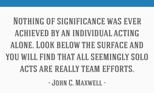
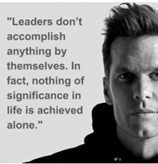
Assessment Limits: MSAS gives maximum scores for patients using gait aids.
Ceiling Effect: The instrument fails to differentiate patients in later rehab phases, inadequately measuring their progress.
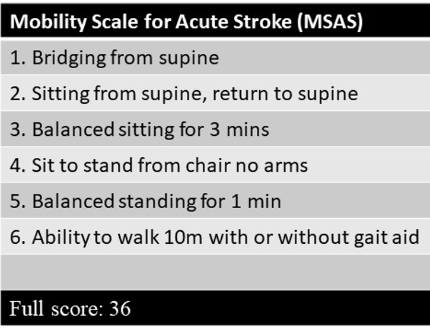
1 COI declaration: I have a patent for a device (“SCREENii”) that automates the gait speed test, but this device is not used in this case study. But I am not the only person who is fanatical about measuring gait speed!
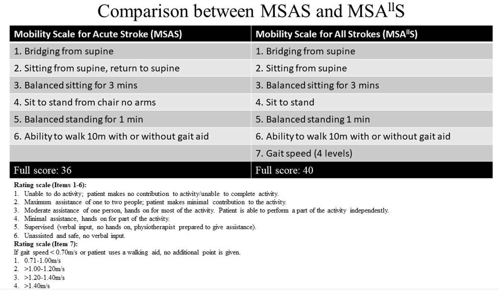
Data collected as part of clinical process
Data Entry is Easy
Data Extraction is Painful with multiple outcome variables in various free 2 textboxes
Time and money needed to include more structured fields
Method to extract data less painfully
Requires standardization and cooperation from colleagues
Step-by-step guide
2 Free text is never free: Price for non-standardized data entry
1outcome1 <- str_extract_all(acl2$value.text, "(?<=\\().*?(?=\\))")Specialized programming language for pattern matching
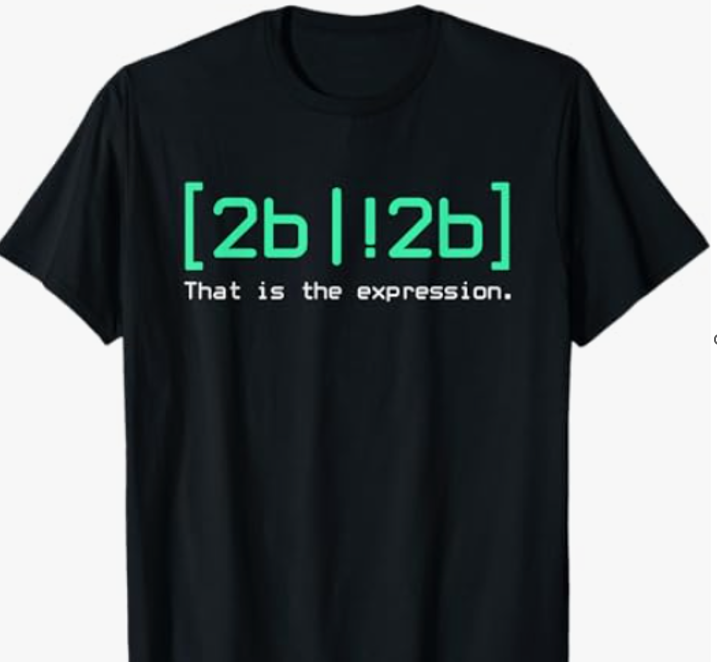
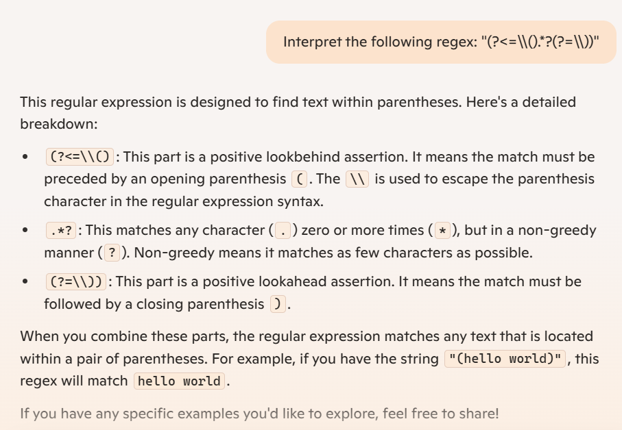
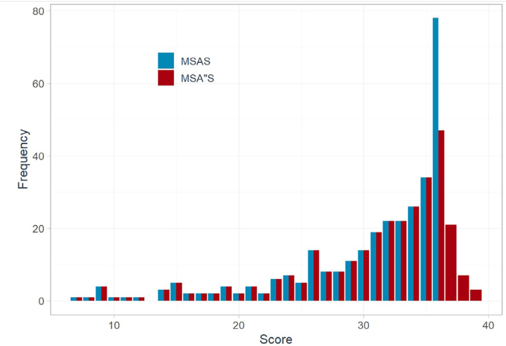
| Ideas | Outcomes |
|---|---|
Bracket Method3 |
Used within and outside SGH PT department (e.g., KKH PT, SKH OT depts) |
MSA"S Project |
- One Publication in APMR journal |
| - Best oral presentation at SingHealth Duke-NUS Scientific Congress 2023 | |
| - Potentially an outcome measure for One Rehab |
3 Poor Man’s solution
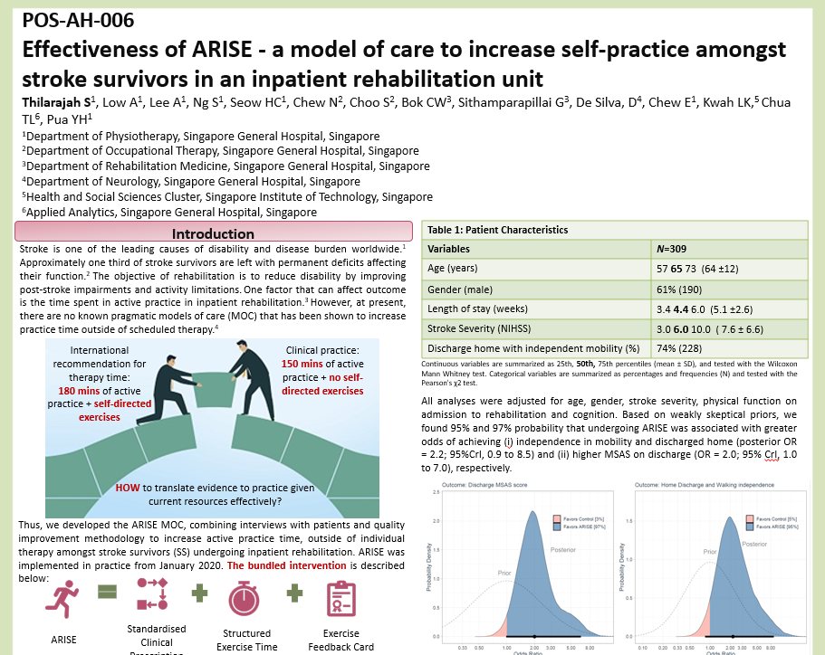
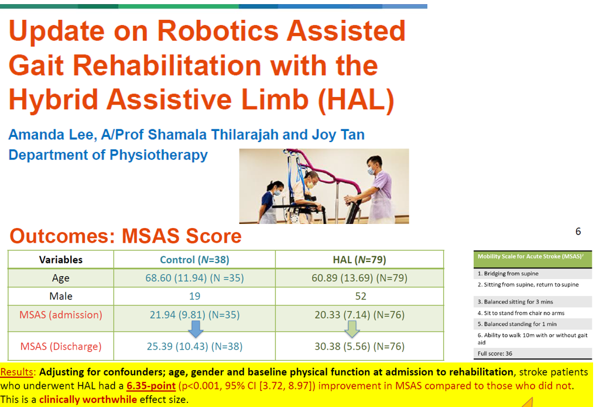
Be Patient4
4 Boring, hackneyed, but true advice
“Solid work, steadily applied, gets you suprisingly far.”
Richard Hamming
Bring something to the collaboration
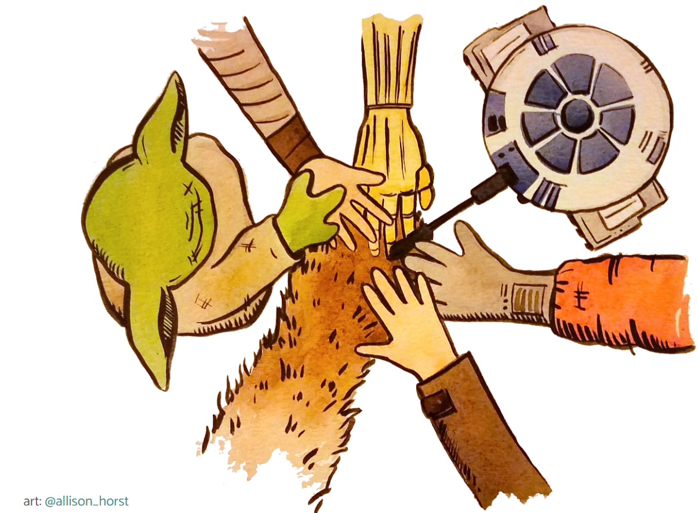
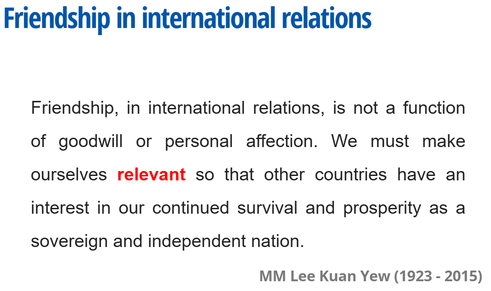
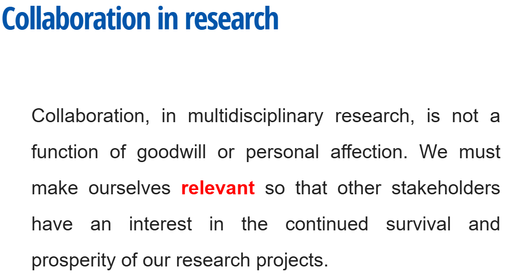